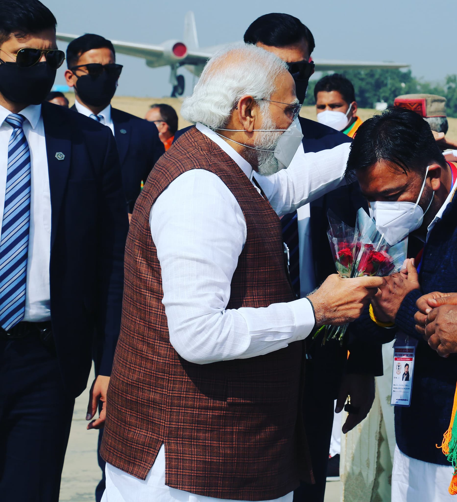

Nayak Family
"From the flames of the First War of Independence to the halls of democratic power: A Dynasty forged in sacrifice, tempered by truth."
A Legacy Carved in Courage
Generations who chose nation over self
The story of this family is inseparable from the story of India itself. For nearly two centuries, each generation has stepped forward when the motherland called — offering their voices, their freedoms, and sometimes their lives in service of the dream of a free and unified Bharat.
"They did not merely witness history. They were its architects, its price, and its promise."
— Family Inscription, 1947Like the lotus that blooms unstained from the mud, this family rose through colonial oppression to bear the flower of independence.
Embodying the four lions of Ashoka's capital — vigilance, strength, pride, and unity — they stood undivided through every trial.
Guided by the Ashoka Chakra's twenty-four spokes — each a virtue, each a duty — their political work was always in service of a higher law.
Freedom Movement
The battles they fought so we could be free
The family's documented participation in the First War of Independence placed them among the earliest organized resistors against British colonial rule.
Following Gandhi's call in 1920, family members surrendered colonial titles, boycotted British goods, and courted arrest alongside thousands of compatriots.
The Salt March of 1930 saw two family members march alongside the Mahatma, symbolizing the family's commitment to non-violent resistance at great personal cost.
August 1942: three members of the family were imprisoned by British authorities for distributing leaflets and organising underground press operations.
Operating a clandestine printing press, the family disseminated revolutionary pamphlets across multiple districts, evading colonial surveillance for four years.
On the 15th of August 1947, as Nehru's voice rang through All India Radio, the family gathered under a hand-sewn tricolour they had hidden through the occupation.
The Lineage
A dynasty of duty across seven generations
The great-great-great grandfather established the family's political consciousness, participating in regional councils and becoming a local voice against unjust taxation levied by the East India Company.
The second and third generations joined the Indian National Congress at its founding stages, contributing financial resources, legal counsel, and organisational leadership to the early independence movement.
Two members of the fourth generation served multiple prison terms under the British Raj. One died in custody; the other emerged in 1945 to witness, and celebrate, the final push toward independence.
Post-independence, the fifth generation transitioned from resistance to reconstruction — serving in state legislatures, contributing to land reform legislation, and championing rural education.
The present generation carries the mantle forward — fighting for constitutional values, inclusive governance, and the protection of the democratic ideals so dearly purchased by their forebears.
Enduring Values
The philosophy that has guided every generation
Unwavering commitment to truth in public life, modelled on the Gandhian principle that political power must rest on moral foundations.
The pen, the ballot, the peaceful march — not the sword. A tradition of democratic resistance that has never compromised on non-violence.
Public office is not a throne but a responsibility. Every family member in politics has held service to the common citizen as their highest obligation.
From land reforms to legal aid, the family has been a consistent advocate for the rights of the marginalised, the landless, and the voiceless.
Across caste, religion, and language — the family's politics has always been one of inclusion, mirroring the pluralism of India itself.
Believing education to be the foundation of freedom, every generation has championed universal literacy, founding schools and scholarships.
Sacred Symbols
The icons that define a heritage
Rising pure through adversity, the lotus is the emblem of spiritual and political awakening — the soul of India's renaissance.
Emperor Ashoka's crowning symbol: four lions facing four directions, proclaiming that India's dharma knows no boundary.
Twenty-four spokes for twenty-four virtues. The wheel that stopped Britain's conquest of India's spirit, placed at the centre of our national flag.
Historical Timeline
Key moments in a century-long journey
The Sepoy Mutiny ignites a century of organised resistance. The family patriarch joins local militias, beginning a multigenerational commitment.
The family joins the nascent Congress movement, offering legal expertise and regional political networks.
The Amritsar massacre radicalises the family's stance. The moderate approach is abandoned; full independence becomes the only acceptable goal.
Two family members walk with Gandhi from Sabarmati to Dandi, a 24-day act of defiance that shook the empire.
Three members imprisoned under the Defence of India Rules. The family home is searched and documents confiscated.
Independence at midnight. The family's sacrifices become part of the national story. The work of nation-building begins.
The seventh generation stands for election, carries the family's torch, and fights to protect the democracy their ancestors bled for.
The Vision Forward
What we stand for today
"A nation that forgets its freedom fighters forgets itself. We remember so that we may continue."
— Current GenerationProtecting the Constitution of India — Dr. Ambedkar's gift — from all who would weaken its secular, democratic foundations.
The independence dream was for every Indian, not just the cities. Sustained focus on agricultural reform, irrigation, and rural infrastructure.
Universal, quality public education from village to university — the single greatest investment a free nation can make in itself.
Connect with the Movement
Join the continuing legacy of service
Whether you are a researcher, a citizen, or a fellow traveller in the cause of democratic India — this history belongs to all of us.